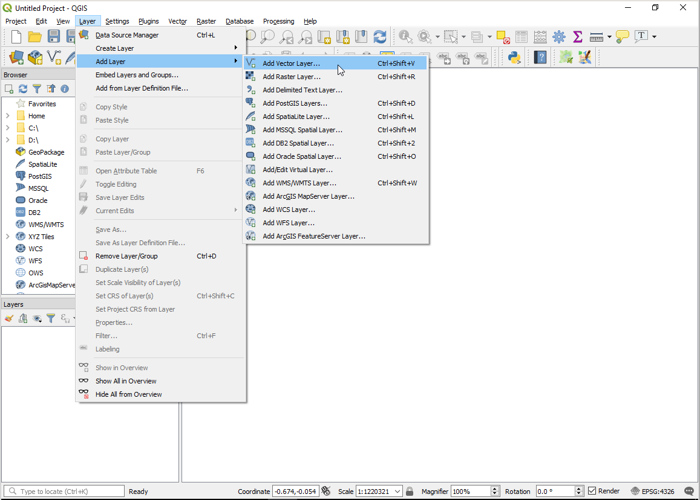
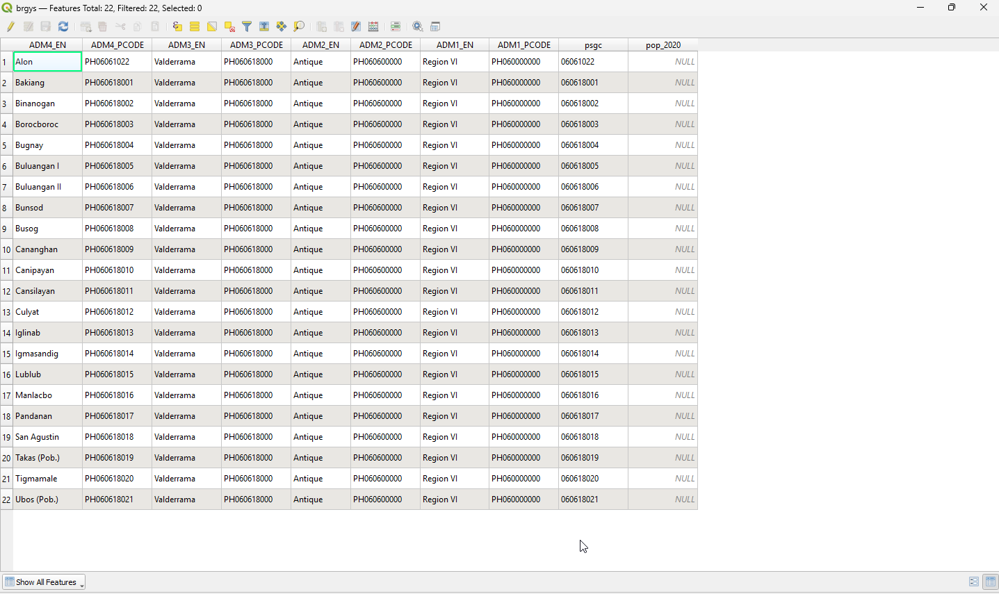
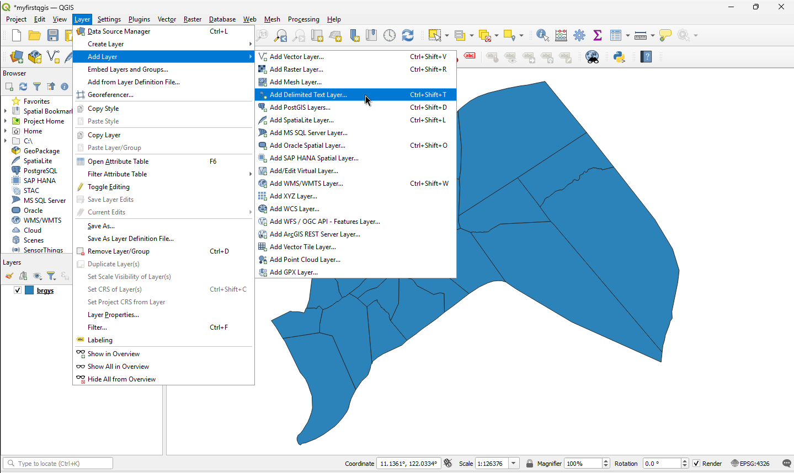
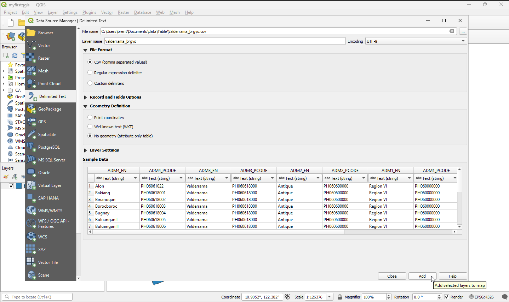
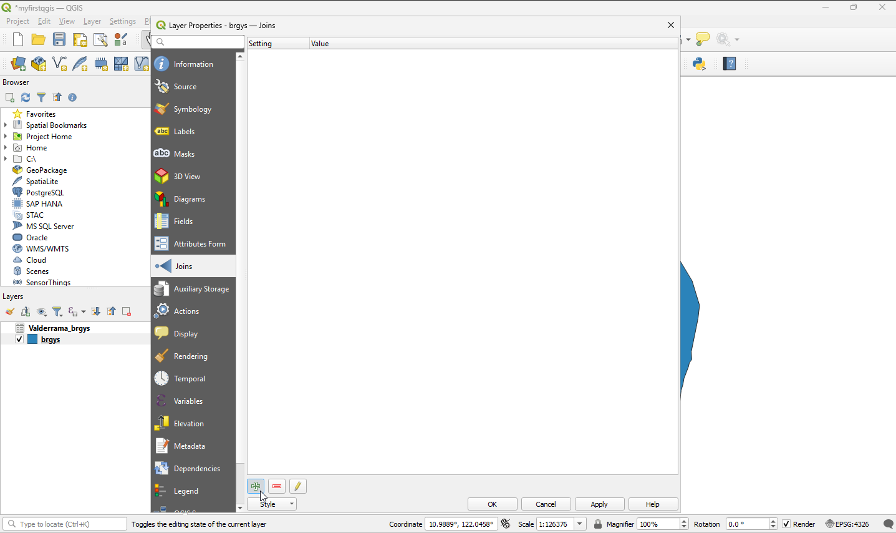
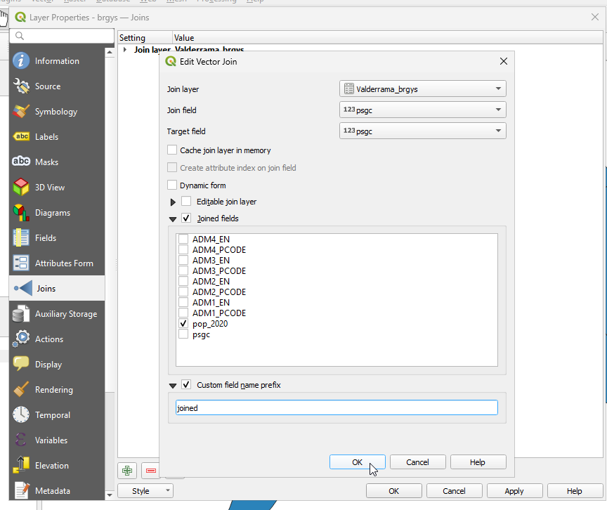
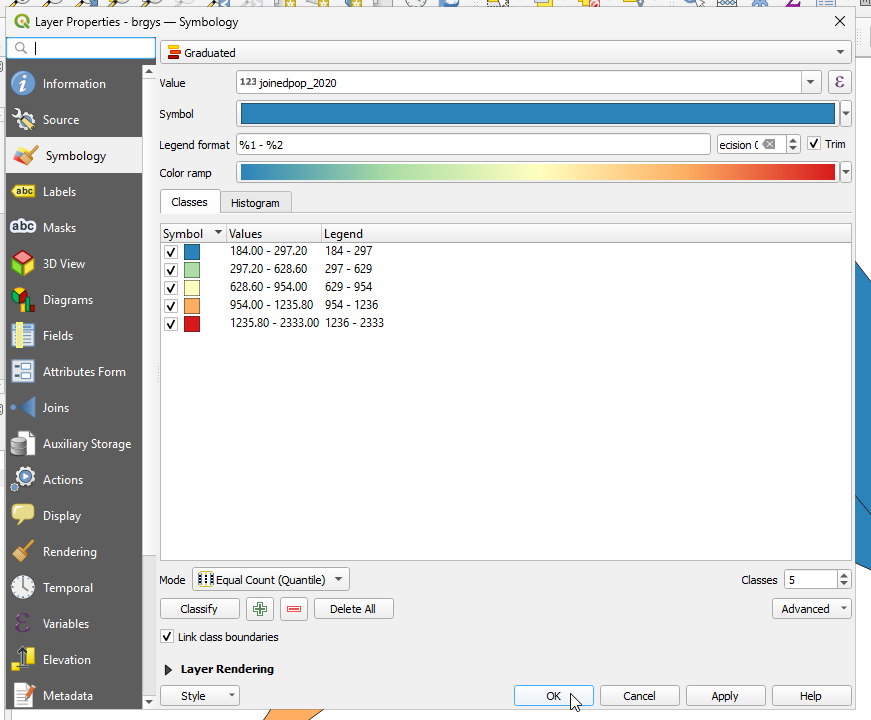

5. Table Join and Relate
QGIS is capable to manage database by joining and relating attributes from different dataset given that they have Identifier.
5.1. Creating a new project
1. Open QGIS and create a new project. In the menu toolbar, click the icon.
{kind=link}
2. Open Project Properties and click the Coordinate Reference System (CRS) tab. Set the following option.
In the Coordinate Reference System, choose Geographic Coordinate Systems –> WGS 84.
5.2. Join Aspatial to Spatial Data
To load vector data, select Layer –>
Add Layer–> Add Vector Layer.Open the following the brgys.shp
{kind=link}

Display the shapefile.
{kind=link}

Examine the attribute table of the shapefile by right-clicking on the shapefile and select Open Attribute Table.
Notice the column “pop_2020” has unique number for each on the entry. This is the table’s Identifier. This is the population in 2020 per barangay that wil serve as the identifier.
Open the Valderrama_brgys.csv in MS Office Excel or LibreOffice Calc.
The .csv should be display similar to what is below. The column “pop_2020” contains the population value. Notice that both brgys.shp and Valderrama_brgys.csv have “pop_2020” column.
{kind=link}
Click Layer –> Add Layer Add Delimited Text Layer.

Select the Valderrama_brgys.csv file. Select “No Geometry” from the Geometry definition tab.

To join the non-spatial identifier data to the spatial shapefile of brgys data, right-click the brgys.shp then select Properties. Select Joins tab. Add a join layer by clicking the + sign in the lower left portion of the window. Then select “psgc” for the Join field and “psgc” for the Target field. Check the box of Joined Fields and click pop_2020. In Custom field name prefix, you may type Joined. Select Apply, then OK.


Open the attribute table of the brys.shp and scroll up to the last column, you will notice the added joinedpop_2020 column which is the “pop_2020” from the .csv file.
To display the population, right-click on the shapefile and click Properties then select the Symbology tab. On the classes of Style, instead of Single Symbol, select Categorized and Spectral for the color ramp tab. For the value tab click joinedpop_2020. Select Classify , then OK.

{kind=link}
{kind=link}
{kind=link}
{kind=link}
{kind=link}
{kind=link}
{kind=link}
{kind=link}
5.2.1. Additional Youtube Video
For the offline version click this link.